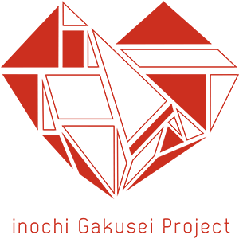

ORGANIZOR
主催 inochi学生プロジェクト×inochi未来プロジェクト
みんなでinochiの大切さと未来について考え、行動するプロジェクト“inochi未来プロジェクト”と、関西・関東の主要大学の医学部生を中心とした「若者の力でヘルスケアの問題を解決する」という目的の下活動するプロジェクト“inochi学生プロジェクト”の協同プロジェクトです。

inochi学生プロジェクトとは
「若者の力でヘルスケアの問題を解決する」という目的の下 活動する大阪大学・京都大学・東京大学・東京医科歯科大学の医学部生が中心となって動いている自主プロジェクトです。活動の軸は、若者の力でヘルスケア問題を解決すること。新しい技術のヘルスケアへの応用模索と地域のヘルスケア問題の解決に取り組みながら真に“innovative”なイノベーションを生み出すことのできる若手人材を生み出すことを目標としています。
inochi未来プロジェクトとは
みんなでinochiの大切さと未来について考え、行動するプロジェクト。 医療者・企業・行政そして市民と患者も。関西・日本が、みんなでささえあいながら、健康で長生きできる街・国になることをめざします。2014年6月にinochi未来プロジェクト実行委員会を立ち上げ、今後、関西発の健康・医療イノベーションを加速させるべく2015年11月に一般社団法人inochi未来プロジェクトへと発展いたしました。一般社団法人inochi未来プロジェクトは、大阪大学大学院医学系研究科 心臓血管外科 澤芳樹教授を理事長として、他8人の理事によって構成されています。